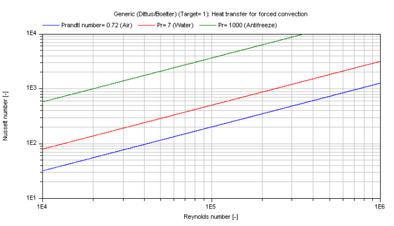

kc_approxForcedConvection |
|
Information
This information is part of the Modelica Standard Library maintained by the Modelica Association.
Approximate calculation of the mean convective heat transfer coefficient kc for forced convection with a fully developed fluid flow in a turbulent regime.
Functions kc_approxForcedConvection and kc_approxForcedConvection_KC
There are basically three differences:
- The function kc_approxForcedConvection is using kc_approxForcedConvection_KC but offers additional output variables like e.g. Reynolds number or Nusselt number and failure status (an output of 1 means that the function is not valid for the inputs).
- Generally the function kc_approxForcedConvection_KC is numerically best used for the calculation of the mean convective heat transfer coefficient kc at known mass flow rate.
- You can perform an inverse calculation from kc_approxForcedConvection_KC, where an unknown mass flow rate is calculated out of a given mean convective heat transfer coefficient kc
Restriction
- Constant wall temperature or constant heat flux
- Turbulent regime (Reynolds number 2500 < Re < 1e6)
- Prandtl number 0.5 ≤ Pr ≤ 500
Calculation
The mean convective heat transfer coefficient kc is approximated through different Nusselt number Nu correlations out of [Bejan 2003, p. 424 ff].
Roughest approximation according to Dittus/Boelter (1930):
Nu_1 = 0.023 * Re^(4/5) * Pr^(exp_Pr)
Middle approximation according to Sieder/Tate (1936) considering the temperature dependence of the fluid properties:
Nu_2 = 0.023 * Re^(4/5) * Pr^(1/3) * (eta/eta_wall)^(0.14)
Finest approximation according to Gnielinski (1976):
Nu_3 = 0.0214 * [Re^(0.8) - 100] * Pr^(0.4) for Pr ≤ 1.5
= 0.012 * [Re^(0.87) - 280] * Pr^(0.4) for Pr > 1.5
The mean convective heat transfer coefficient kc is calculated by:
kc = Nu * lambda / d_hyd
with
| eta | as dynamic viscosity of fluid [Pa.s], |
| eta_wall | as dynamic viscosity of fluid at wall temperature [Pa.s], |
| exp_Pr | as exponent for Prandtl number w.r.t. Dittus/Boelter (0.4 for heating or 0.3 for cooling) [-], |
| kc | as mean convective heat transfer coefficient [W/(m2.K)], |
| lambda | as heat conductivity of fluid [W/(m.K)], |
| d_hyd | as hydraulic diameter [m], |
| Nu_1/2/3 | as mean Nusselt number [-], |
| Pr | as Prandtl number [-], |
| Re | as Reynolds number [-]. |
Verification
The mean Nusselt number Nu representing the mean convective heat transfer coefficient kc for Prandtl numbers of different fluids is shown in the figure below.
Dittus/Boelter (target = Modelica.Fluid.Dissipation.Utilities.Types.kc_general.Rough)

Sieder/Tate (Target = Modelica.Fluid.Dissipation.Utilities.Types.kc_general.Middle)

Gnielinski (Target = Modelica.Fluid.Dissipation.Utilities.Types.kc_general.Finest)

Note that all fluid properties shall be calculated with the mean temperature of the fluid between the entrance and the outlet of the generic device.
References
- Bejan,A.:
- Heat transfer handbook. Wiley, 2003.